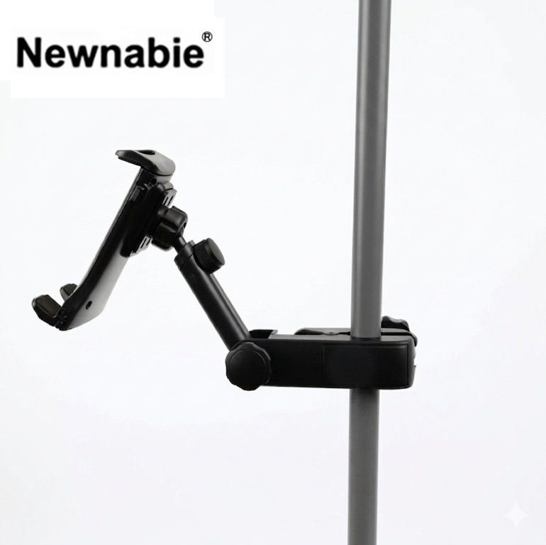

Newnabie NB-51은 마이크 스탠드에 체결해 사용할 수 있는 모바일폰 거치대입니다. 설치 적용 길이 11–20 mm 범위의 클램프로 대부분의 스마트폰(케이스 포함 두께 2 cm까지)을 안정적으로 고정할 수 있어, 라이브 스트리밍 · 모바일 녹음 · 가사 화면 확인 등의 용도에 활용됩니다.

마이크 스탠드에 체결해 스마트폰을 거치하는 모바일폰 홀더. 라이브 스트리밍·가사 확인·모바일 녹음 환경에 유용한 액세서리입니다.
NB-51은 마이크 스탠드의 포스트에 클램프로 체결해 스마트폰을 거치할 수 있도록 해 주는 전용 액세서리입니다. 11–20 mm 두께 범위의 클램프 그립으로 대부분의 스마트폰(보호 케이스를 장착한 상태 포함)을 안정적으로 잡아 줍니다.
보컬이 가사를 화면에서 확인하면서 연주해야 하는 연습 세션, 라이브 스트리밍을 하면서 마이크로도 수음해야 하는 개인 방송, 모바일폰을 녹음 기기로 사용하는 현장에서 특히 유용합니다. 150 g의 가벼운 무게로 마이크 스탠드 밸런스에 영향을 주지 않습니다.
| 모델명 | NB-51 |
|---|---|
| 타입 | Mobile Phone Holder for Mic Stand |
| 설치 적용 두께 | 11 – 20 mm |
| 설치 방식 | 마이크 스탠드 포스트 클램프 체결 |
| Net Weight | 150 g |
| 권장소비자가 | 13,200 원 / 개 (VAT 포함) |
※ 본 사양 · 단가는 수입원(현대에이브이씨) 2026-01-01 스탠드 가격표 기준입니다.